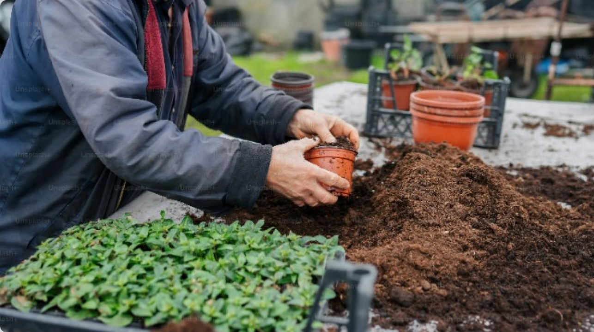

I-Trashy
Halo, Atalaric👋


Rp 50.000
Transfer
Tagihan
Donasi
Tukar Poin
Terbaru

Belajar Mengelola Sampah Sejak Dini
Membangun generasi peduli Lingkungan untuk Masa Depan Lebih Bersih
I-Trashy • 02 Januari 2024

Rusaknya Pantai Akibat Sampah Ma...
Dampak Lingkungan yang parah, berikut Solusi Penanganannya
I-Trashy • 02 Januari 2024

Kasus Penyu mati akibat sedotan...
Ancaman Nyata bagi Kehidupan Laut dan Upaya Pencegahannya
I-Trashy • 02 Januari 2024

Membuat Kerajinan Daur Ulang Dari...
Kreativitas Ramah Lingkungan untuk Mengurangi Limbah rumah tangga anda
I-Trashy • 02 Januari 2024

Membuat Pupuk Kompos Dari Samp...
Solusi Alami untuk Mengurangi Limbah dan Menyuburkan Tanah
I-Trashy • 02 Januari 2024
Jadwal Penjemputan
Belum ada penjemputan yang harus dilakukan nih!